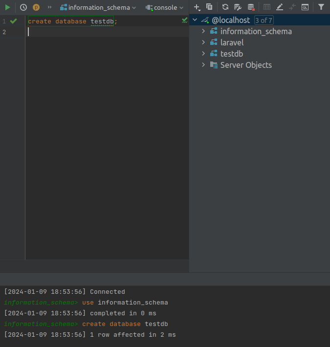

SETTING UP TESTING DATABASE
Step 1 :
The first step is to create a database. This database should be a clone of your real database, which is used by the application but should not contain any data inside the tables.
Step 2 :
In .env file add the following keys :
DB_TEST_HOST=127.0.0.1
DB_TEST_PORT=3306
DB_TEST_DATABASE=testdb
DB_TEST_USERNAME=root
DB_TEST_PASSWORD=Qwerty@321
Note
Change the “Port” , “Database name” and “Password” according to your credentials.
Step 3 :
Alter APP_ENV key in .env file :
APP_ENV=testing
Step 4 :
Put the below code in config/database.php :
'testing' => [
'driver' => 'mysql',
'url' => env('DATABASE_URL'),
'host' => env('DB_TEST_HOST', '127.0.0.1'),
'port' => env('DB_TEST_PORT', '3306'),
'database' => env('DB_TEST_DATABASE', 'forge'),
'username' => env('DB_TEST_USERNAME', 'forge'),
'password' => env('DB_TEST_PASSWORD', ''),
'unix_socket' => env('DB_SOCKET', ''),
'charset' => 'utf8mb4',
'collation' => 'utf8mb4_unicode_ci',
'prefix' => '',
'prefix_indexes' => true,
'strict' => true,
'engine' => null
],
Note
Put the above code just after mysql array.
Step 5 :
Add the below code in phpunit.xml file :
<env name="DB_CONNECTION" value="testing"/>
Step 6 :
Run the command to migrate tables in the testing database :
php artisan migrate:fresh --database=testing --seed